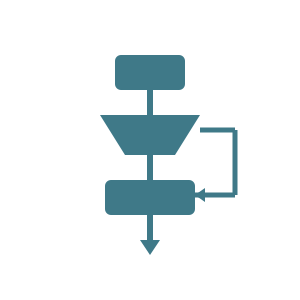
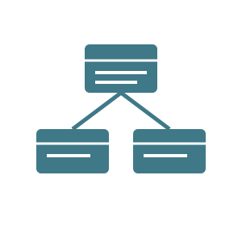
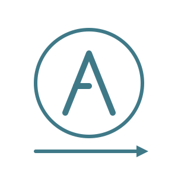

La programación imperativa es un paradigma que se basa en indicar paso a paso las instrucciones que debe realizar una computadora para completar una tarea. El programador establece una secuencia de acciones y puede modificar los datos mientras el programa se encuentra en funcionamiento. Este modelo fue utilizado desde los primeros lenguajes de programación y continúa siendo muy importante actualmente. Lenguajes como C, Python y JavaScript permiten utilizar este tipo de programación.

La programación orientada a objetos organiza los programas utilizando conceptos como clases y objetos. Los objetos pueden representar elementos de un sistema y contener información sobre sus características y acciones que pueden realizar. Este paradigma permite dividir programas grandes en partes más pequeñas y organizadas, facilitando su mantenimiento y reutilización. Lenguajes como Java, C++, Python y C# utilizan ampliamente la programación orientada a objetos para desarrollar diferentes tipos de aplicaciones.

La programación funcional es un paradigma que utiliza principalmente funciones para procesar información y producir resultados. Busca organizar los programas de una manera clara y evitar modificaciones innecesarias de los datos. Algunas características de este paradigma permiten crear código más predecible y facilitar determinadas tareas complejas. Existen lenguajes especialmente orientados a este modelo, aunque también hay lenguajes como Python, JavaScript y Java que incorporan características de la programación funcional.